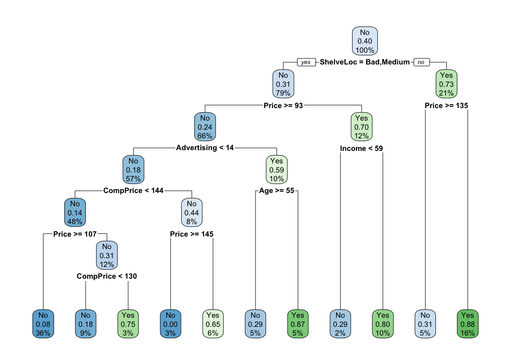
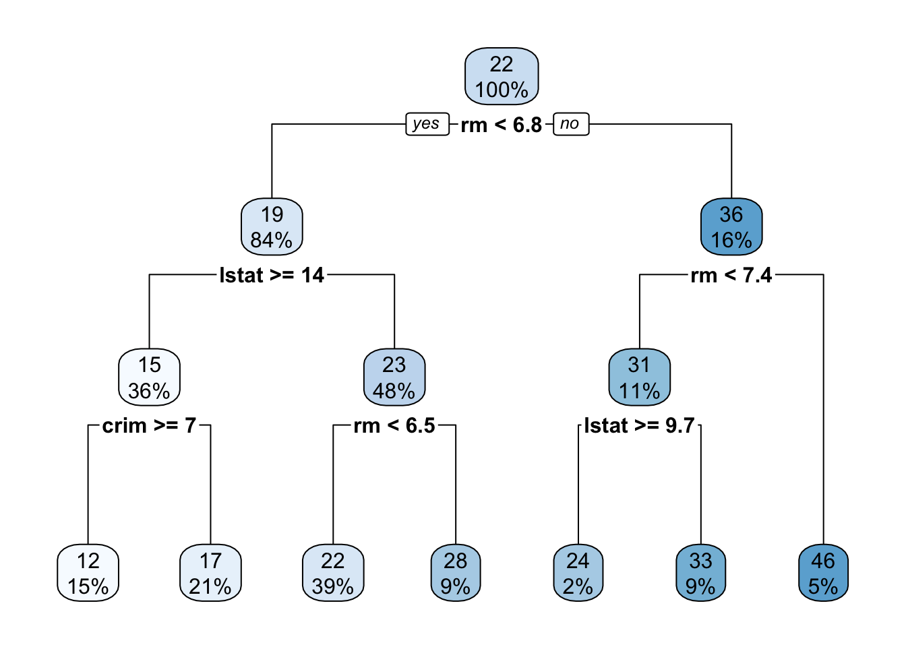
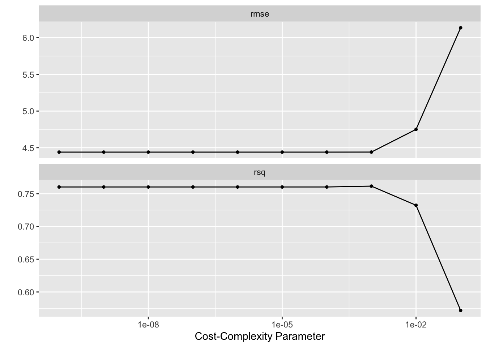
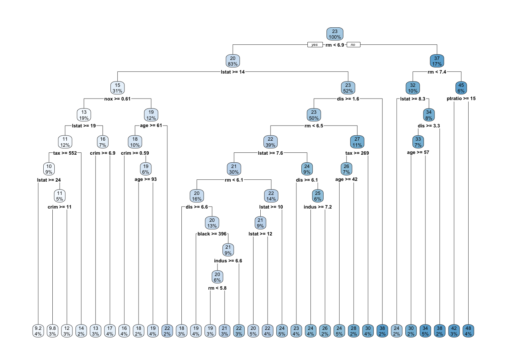
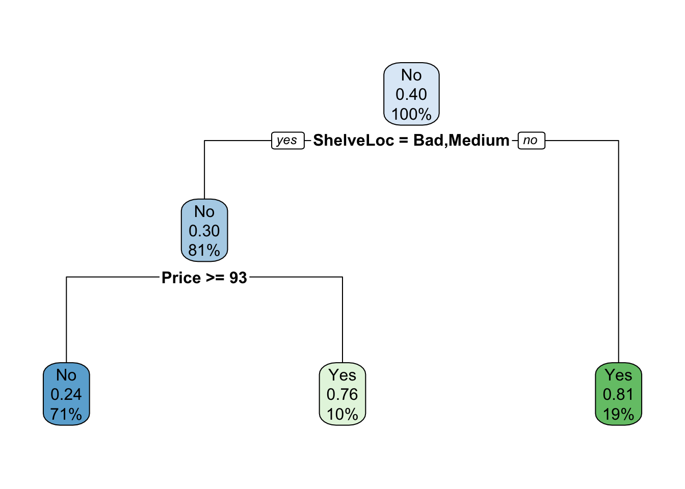
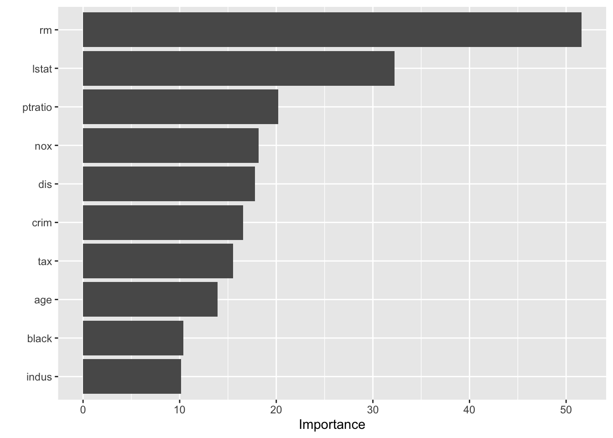
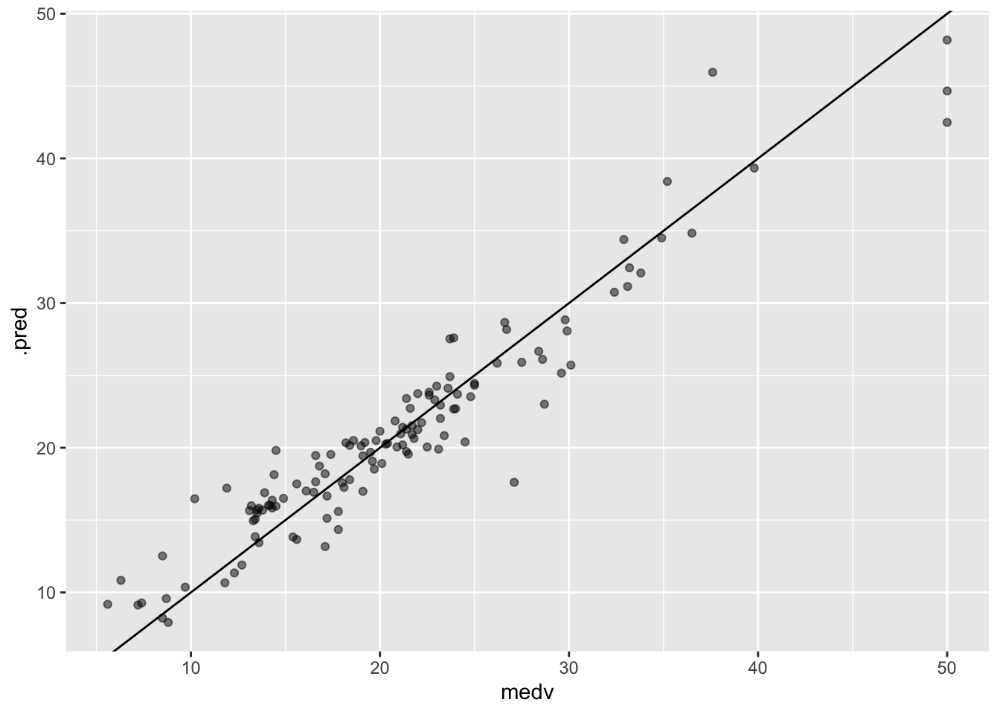
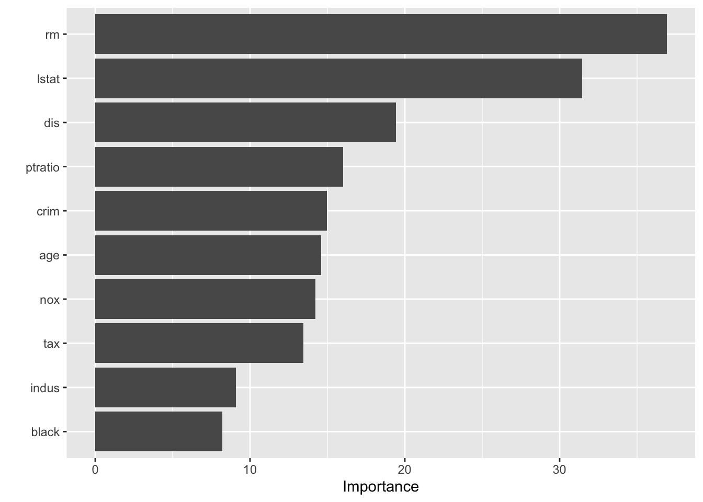
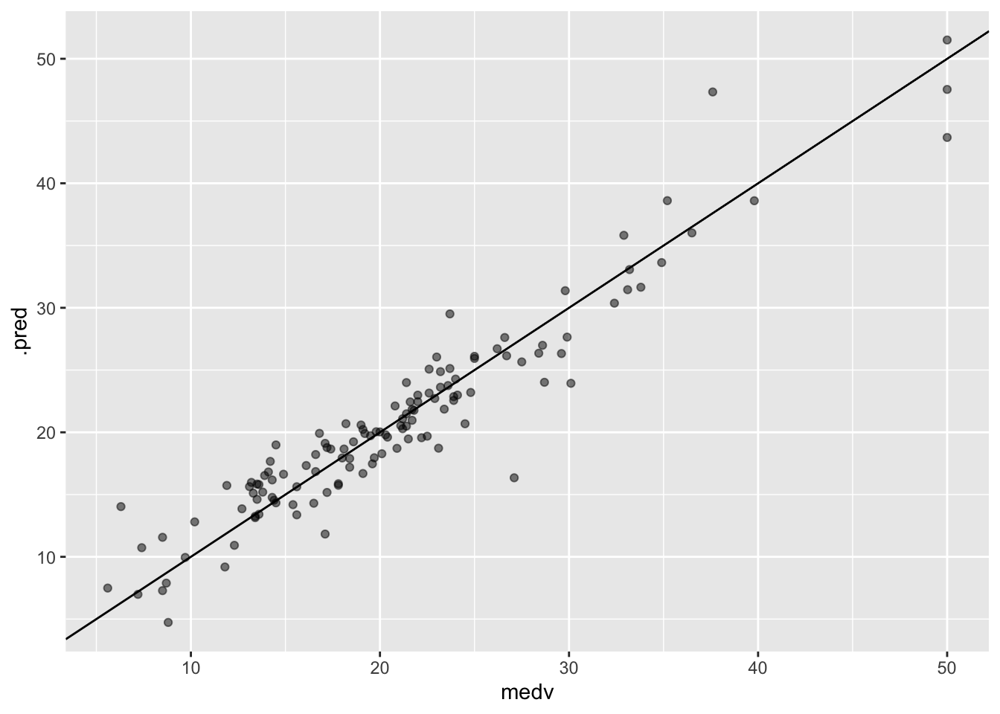
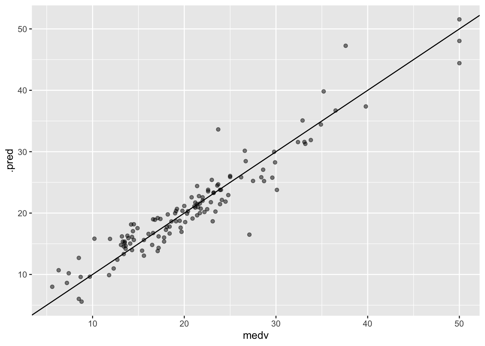

8 Tree-Based Methods
8.1 Fitting Classification Trees
Carseats <- as_tibble(Carseats) %>%
mutate(High = factor(if_else(Sales <= 8, "No", "Yes")))
tree_spec <- decision_tree() %>%
set_engine("rpart")
class_tree_spec <- tree_spec %>%
set_mode("classification")
class_tree_fit <- fit(class_tree_spec, High ~ . - Sales, data = Carseats)
class_tree_fit$fit## n= 400
##
## node), split, n, loss, yval, (yprob)
## * denotes terminal node
##
## 1) root 400 164 No (0.59000000 0.41000000)
## 2) ShelveLoc=Bad,Medium 315 98 No (0.68888889 0.31111111)
## 4) Price>=92.5 269 66 No (0.75464684 0.24535316)
## 8) Advertising< 13.5 224 41 No (0.81696429 0.18303571)
## 16) CompPrice< 124.5 96 6 No (0.93750000 0.06250000) *
## 17) CompPrice>=124.5 128 35 No (0.72656250 0.27343750)
## 34) Price>=109.5 107 20 No (0.81308411 0.18691589)
## 68) Price>=126.5 65 6 No (0.90769231 0.09230769) *
## 69) Price< 126.5 42 14 No (0.66666667 0.33333333)
## 138) Age>=49.5 22 2 No (0.90909091 0.09090909) *
## 139) Age< 49.5 20 8 Yes (0.40000000 0.60000000) *
## 35) Price< 109.5 21 6 Yes (0.28571429 0.71428571) *
## 9) Advertising>=13.5 45 20 Yes (0.44444444 0.55555556)
## 18) Age>=54.5 20 5 No (0.75000000 0.25000000) *
## 19) Age< 54.5 25 5 Yes (0.20000000 0.80000000) *
## 5) Price< 92.5 46 14 Yes (0.30434783 0.69565217)
## 10) Income< 57 10 3 No (0.70000000 0.30000000) *
## 11) Income>=57 36 7 Yes (0.19444444 0.80555556) *
## 3) ShelveLoc=Good 85 19 Yes (0.22352941 0.77647059)
## 6) Price>=142.5 12 3 No (0.75000000 0.25000000) *
## 7) Price< 142.5 73 10 Yes (0.13698630 0.86301370) *## Loading required package: rpart##
## Attaching package: 'rpart'## The following object is masked from 'package:dials':
##
## prune
rpart.plot(class_tree_fit$fit)
augment(class_tree_fit, new_data = Carseats) %>%
accuracy(truth = High, estimate = .pred_class)## # A tibble: 1 x 3
## .metric .estimator .estimate
## <chr> <chr> <dbl>
## 1 accuracy binary 0.848
Carseats_split <- initial_split(Carseats)
Carseats_train <- training(Carseats_split)
Carseats_test <- testing(Carseats_split)
class_tree_fit <- fit(class_tree_spec, High ~ . - Sales, data = Carseats_train)
augment(class_tree_fit, new_data = Carseats_train) %>%
conf_mat(truth = High, estimate = .pred_class)## Truth
## Prediction No Yes
## No 138 18
## Yes 29 115
augment(class_tree_fit, new_data = Carseats_test) %>%
conf_mat(truth = High, estimate = .pred_class)## Truth
## Prediction No Yes
## No 49 10
## Yes 20 21
class_tree_wf <- workflow() %>%
add_model(class_tree_spec %>% set_args(cost_complexity = tune())) %>%
add_formula(High ~ . - Sales)
set.seed(1234)
Carseats_fold <- vfold_cv(Carseats_train)
param_grid <- grid_regular(cost_complexity(), levels = 10)
tune_res <- tune_grid(
class_tree_wf,
resamples = Carseats_fold,
grid = param_grid,
metrics = metric_set(accuracy)
)
autoplot(tune_res)
best_complexity <- select_best(tune_res)
class_tree_final <- finalize_workflow(class_tree_wf, best_complexity)
class_tree_final_fit <- fit(class_tree_final, data = Carseats_train)
rpart.plot(class_tree_final_fit$fit$fit$fit)
8.2 Fitting Regression Trees
reg_tree_spec <- tree_spec %>%
set_mode("regression")
set.seed(1234)
Boston_split <- initial_split(Boston)
Boston_train <- training(Boston_split)
Boston_test <- testing(Boston_split)
reg_tree_fit <- fit(reg_tree_spec, medv ~ ., Boston_train)
rpart.plot(reg_tree_fit$fit)
reg_tree_wf <- workflow() %>%
add_model(reg_tree_spec %>% set_args(cost_complexity = tune())) %>%
add_formula(medv ~ .)
set.seed(1234)
Boston_fold <- vfold_cv(Boston_train)
param_grid <- grid_regular(cost_complexity(), levels = 10)
tune_res <- tune_grid(
reg_tree_wf,
resamples = Boston_fold,
grid = param_grid
)
autoplot(tune_res)
best_complexity <- select_best(tune_res, metric = "rmse")
reg_tree_final <- finalize_workflow(reg_tree_wf, best_complexity)
reg_tree_final_fit <- fit(reg_tree_final, data = Boston_train)
rpart.plot(reg_tree_final_fit$fit$fit$fit)
8.3 Bagging and Random Forests
bagging_spec <- rand_forest(mtry = .cols()) %>%
set_engine("randomForest", importance = TRUE) %>%
set_mode("regression")
bagging_fit <- fit(bagging_spec, medv ~ ., data = Boston_train)
augment(bagging_fit, new_data = Boston_test) %>%
rmse(truth = medv, estimate = .pred)## # A tibble: 1 x 3
## .metric .estimator .estimate
## <chr> <chr> <dbl>
## 1 rmse standard 2.53
augment(bagging_fit, new_data = Boston_test) %>%
ggplot(aes(medv, .pred)) +
geom_abline() +
geom_point(alpha = 0.5)
##
## Attaching package: 'vip'## The following object is masked from 'package:utils':
##
## vi
vip(bagging_fit)
rf_spec <- rand_forest(mtry = 6) %>%
set_engine("randomForest", importance = TRUE) %>%
set_mode("regression")
rf_fit <- fit(rf_spec, medv ~ ., data = Boston_train)
augment(rf_fit, new_data = Boston_test) %>%
rmse(truth = medv, estimate = .pred)## # A tibble: 1 x 3
## .metric .estimator .estimate
## <chr> <chr> <dbl>
## 1 rmse standard 2.50
augment(rf_fit, new_data = Boston_test) %>%
ggplot(aes(medv, .pred)) +
geom_abline() +
geom_point(alpha = 0.5)

8.4 Boosting
boost_spec <- boost_tree(trees = 5000, tree_depth = 4) %>%
set_engine("xgboost") %>%
set_mode("regression")
boost_fit <- fit(boost_spec, medv ~ ., data = Boston_train)
augment(boost_fit, new_data = Boston_test) %>%
rmse(truth = medv, estimate = .pred)## # A tibble: 1 x 3
## .metric .estimator .estimate
## <chr> <chr> <dbl>
## 1 rmse standard 2.57
augment(boost_fit, new_data = Boston_test) %>%
ggplot(aes(medv, .pred)) +
geom_abline() +
geom_point(alpha = 0.5)
boost_spec <- boost_tree(trees = 5000, tree_depth = 4, learn_rate = 0.2) %>%
set_engine("xgboost") %>%
set_mode("regression")
boost_fit <- fit(boost_spec, medv ~ ., data = Boston_train)
augment(boost_fit, new_data = Boston_test) %>%
rmse(truth = medv, estimate = .pred)## # A tibble: 1 x 3
## .metric .estimator .estimate
## <chr> <chr> <dbl>
## 1 rmse standard 2.62
augment(boost_fit, new_data = Boston_test) %>%
ggplot(aes(medv, .pred)) +
geom_abline() +
geom_point(alpha = 0.5)